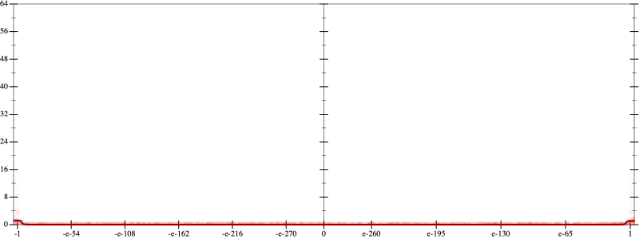
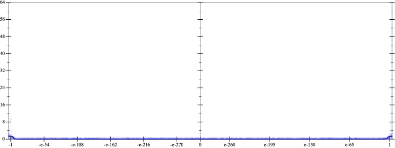
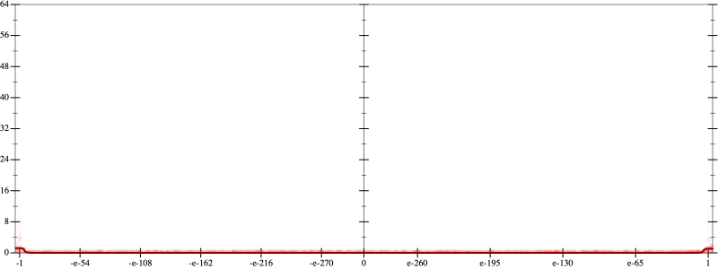
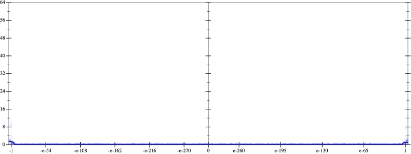

Initial program 0.0
\[\left(\left(\left(\left(\left(\left(\left(518918400.0 + -8302694400.0 \cdot \left(x \cdot x\right)\right) + 19372953600.0 \cdot \left(\left(\left(x \cdot x\right) \cdot x\right) \cdot x\right)\right) + -15498362880.0 \cdot \left(\left(\left(\left(\left(x \cdot x\right) \cdot x\right) \cdot x\right) \cdot x\right) \cdot x\right)\right) + 5535129600.0 \cdot \left(\left(\left(\left(\left(\left(\left(x \cdot x\right) \cdot x\right) \cdot x\right) \cdot x\right) \cdot x\right) \cdot x\right) \cdot x\right)\right) + -984023040.0 \cdot \left(\left(\left(\left(\left(\left(\left(\left(\left(x \cdot x\right) \cdot x\right) \cdot x\right) \cdot x\right) \cdot x\right) \cdot x\right) \cdot x\right) \cdot x\right) \cdot x\right)\right) + 89456640.0 \cdot \left(\left(\left(\left(\left(\left(\left(\left(\left(\left(\left(x \cdot x\right) \cdot x\right) \cdot x\right) \cdot x\right) \cdot x\right) \cdot x\right) \cdot x\right) \cdot x\right) \cdot x\right) \cdot x\right) \cdot x\right)\right) + -3932160.0 \cdot \left(\left(\left(\left(\left(\left(\left(\left(\left(\left(\left(\left(\left(x \cdot x\right) \cdot x\right) \cdot x\right) \cdot x\right) \cdot x\right) \cdot x\right) \cdot x\right) \cdot x\right) \cdot x\right) \cdot x\right) \cdot x\right) \cdot x\right) \cdot x\right)\right) + 65536.0 \cdot \left(\left(\left(\left(\left(\left(\left(\left(\left(\left(\left(\left(\left(\left(\left(x \cdot x\right) \cdot x\right) \cdot x\right) \cdot x\right) \cdot x\right) \cdot x\right) \cdot x\right) \cdot x\right) \cdot x\right) \cdot x\right) \cdot x\right) \cdot x\right) \cdot x\right) \cdot x\right) \cdot x\right)\]
Applied simplify0.0
\[\leadsto \color{blue}{\left(\left(\left(x \cdot x\right) \cdot \left(x \cdot x\right)\right) \cdot \left(19372953600.0 + x \cdot \left(-15498362880.0 \cdot x\right)\right) + \left(\left(\left(x \cdot x\right) \cdot -8302694400.0 + 518918400.0\right) + \left(\left(x \cdot x\right) \cdot 5535129600.0\right) \cdot {\left(x \cdot x\right)}^{3}\right)\right) + \left(\left({\left(x \cdot x\right)}^{3} \cdot \left(\left(x \cdot x\right) \cdot \left(x \cdot x\right)\right)\right) \cdot \left(-984023040.0 + x \cdot \left(89456640.0 \cdot x\right)\right) + \left(\left({\left(x \cdot x\right)}^{3} \cdot \left(\left(x \cdot x\right) \cdot \left(x \cdot x\right)\right)\right) \cdot \left(\left(x \cdot x\right) \cdot \left(x \cdot x\right)\right)\right) \cdot \left(-3932160.0 + \left(x \cdot x\right) \cdot 65536.0\right)\right)}\]
Taylor expanded around 0 0.0
\[\leadsto \left(\left(\left(x \cdot x\right) \cdot \left(x \cdot x\right)\right) \cdot \left(19372953600.0 + x \cdot \left(-15498362880.0 \cdot x\right)\right) + \left(\left(\color{blue}{-8302694400.0 \cdot {x}^{2}} + 518918400.0\right) + \left(\left(x \cdot x\right) \cdot 5535129600.0\right) \cdot {\left(x \cdot x\right)}^{3}\right)\right) + \left(\left({\left(x \cdot x\right)}^{3} \cdot \left(\left(x \cdot x\right) \cdot \left(x \cdot x\right)\right)\right) \cdot \left(-984023040.0 + x \cdot \left(89456640.0 \cdot x\right)\right) + \left(\left({\left(x \cdot x\right)}^{3} \cdot \left(\left(x \cdot x\right) \cdot \left(x \cdot x\right)\right)\right) \cdot \left(\left(x \cdot x\right) \cdot \left(x \cdot x\right)\right)\right) \cdot \left(-3932160.0 + \left(x \cdot x\right) \cdot 65536.0\right)\right)\]
Applied simplify0.0
\[\leadsto \color{blue}{\left(\left(\left(\left(x \cdot x\right) \cdot 5535129600.0\right) \cdot {\left(x \cdot x\right)}^{3} + \left(518918400.0 + \left(x \cdot x\right) \cdot -8302694400.0\right)\right) + \left(-3932160.0 + \left(x \cdot x\right) \cdot 65536.0\right) \cdot \left({\left(x \cdot x\right)}^{3} \cdot {\left(x \cdot x\right)}^{\left(3 + 1\right)}\right)\right) + \left(\left(\left(x \cdot x\right) \cdot -15498362880.0 + 19372953600.0\right) \cdot \left(\left(x \cdot x\right) \cdot \left(x \cdot x\right)\right) + \left(\left(x \cdot x\right) \cdot 89456640.0 + -984023040.0\right) \cdot \left(\left({x}^{3} \cdot \left(x \cdot x\right)\right) \cdot \left({x}^{3} \cdot \left(x \cdot x\right)\right)\right)\right)}\]
 
